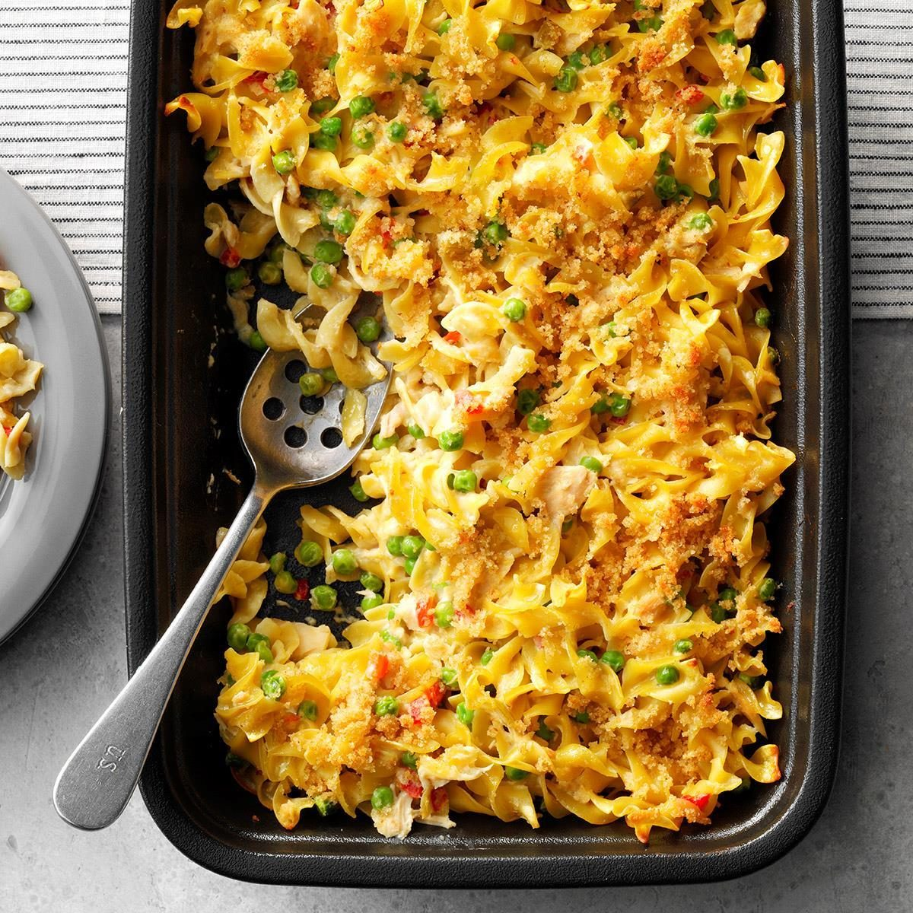

Easy Tuna Casserole

Description
Tuna, macaroni, creamy soup, cheese and fried onions are all you need to make this super easy
tuna casserole that I learned from my roommate. It's great as leftovers, too.
Ingredients
- 3 cups cooked macaroni
- 1 (5 ounce) can tuna, drained
- 1 (10.75 ounce) can condensed cream of chicken soup
- 1 cup shredded Cheddar cheese
- 1 1/ 2 cups of frenched fried onions
Steps
- Preheat oven to 350 degrees F (175 degrees C).
- In a 9x13-inch baking dish, combine the macaroni, tuna, and soup. Mix well, and then
top with cheese.
- Bake at 350 degrees F (175 degrees C) for about 25 minutes, or until bubbly. Sprinkle
with fried onions, and bake for another 5 minutes. Serve hot.